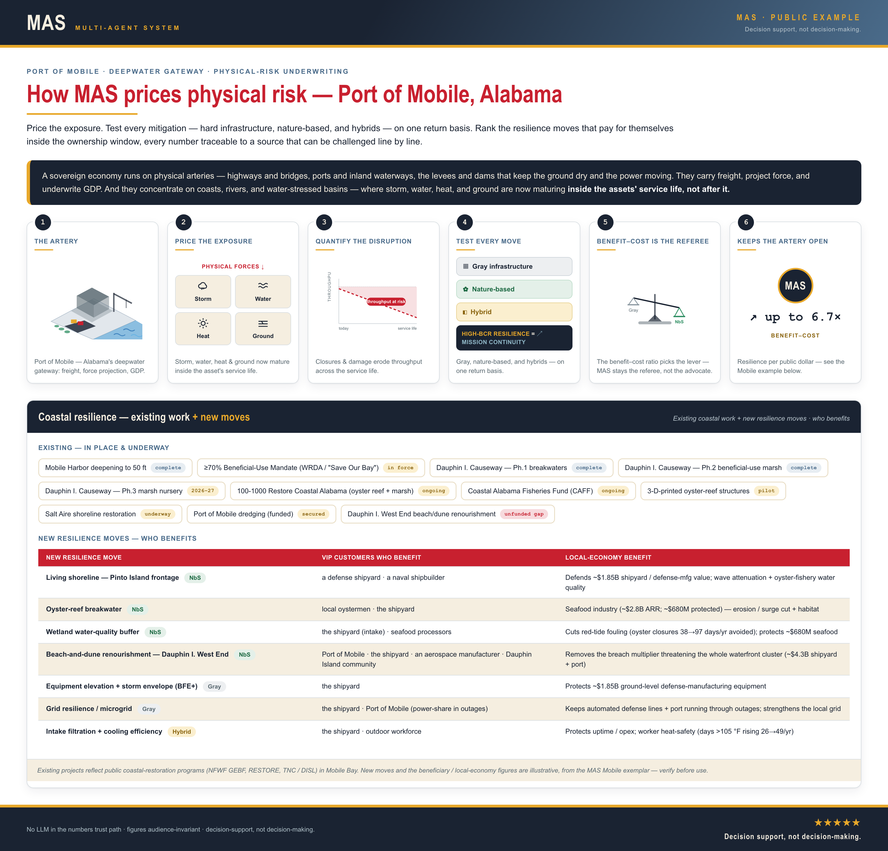

THE ECONOMY RUNS
ON EXPOSED GROUND
Highways, ports, waterways, levees, and dams — the arteries that move freight and project force — concentrate on coasts, rivers, and water-stressed basins. There, storm, flooding, heat, and wildfire now mature inside the asset's service life, not after it.
THEN — BUILT FOR A PAST, WHEN EXTREME WEATHER WAS FAR MORE RARE
The asset was built, used, and replaced before its design basis was exceeded. The cost landed on a later generation.
NOW — THE RISK MATURES ON YOUR WATCH
Storm, flooding, heat, and wildfire now move faster than the asset can be rebuilt. The loss window opens inside the service life.
Global Sources
Solutions proven to work from every type of source — including hyperlocal indigenous knowledge backed by scientific peer-review, from a worldwide evidence base.
Higher Accuracy: Risk and Mitigation Assessments
Built on downscaled climate and risk modeling, validated against observed events.
All Physical Infrastructure
A universal translator for collective risks and mitigations — across power grids, water management, physical infrastructure, coastlines, and more.
WORKED EXAMPLE — THE PORT OF MOBILE
The Economy It Carries
$98.3B in statewide economic impact and 351,359 jobs — one of every seven jobs in Alabama — route through the port.
The Readiness It Carries
Mobile is a designated strategic seaport and an active shipbuilding base with expanding submarine-industrial work. It deploys force and builds fleet.
